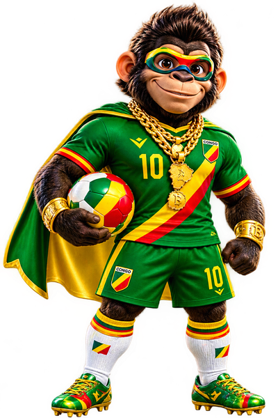
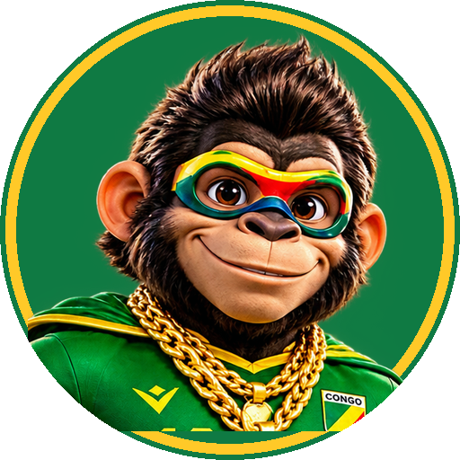

Mes maillotsCONGO

✏️ Recopie la réponse dans ton cahier pour bien la comprendre.
Cette rubrique arrive bientôt. Super Brazza la prépare !

✏️ Recopie la réponse dans ton cahier pour bien la comprendre.
Cette rubrique arrive bientôt. Super Brazza la prépare !

Super Brazza veut connaître ton prénom pour bien t’accueillir !
Quel âge as-tu ?